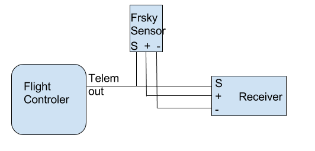

Telemetry¶
Telemetry allows you to know what is happening on your aircraft while you are flying it. Among other things you can receive battery voltages and GPS positions on your transmitter.
Telemetry can be either always on, or enabled when armed. If a serial port for telemetry is shared with other functionality then telemetry will only be enabled when armed on that port.
Telemetry is enabled using the 'TELEMETRY` feature.
feature TELEMETRY
Multiple telemetry providers are currently supported, FrSky, Graupner HoTT V4, SmartPort (S.Port), LightTelemetry (LTM) and Ibus
All telemetry systems use serial ports, configure serial ports to use the telemetry system required.
FrSky telemetry¶
FrSky telemetry is transmit only and just requires a single connection from the TX pin of a serial port to the RX pin on an FrSky telemetry receiver.
FrSky telemetry signals are inverted. To connect a WingFlight capable board to an FrSKy receiver you have some options.
- A hardware inverter - Built in to some flight controllers.
- Use software serial and enable frsky_inversion.
- Use a flight controller that has software configurable hardware inversion .
For 1, just connect your inverter to a usart or software serial port.
For 2 and 3 use the CLI command as follows:
set tlm_inverted = ON
Available sensors¶
The following sensors are transmitted :
| Name | Description |
|---|---|
| Vspd | vertical speed, unit is cm/s. |
| Hdg | heading, North is 0°, South is 180°. |
| AccX,Y,Z | accelerometers values. |
| Tmp1 | baro temp if available, gyro otherwise. |
| RPM | if armed, throttle value. battery capacity otherwise. (Blade number needs to be set to 12 in Taranis). |
| VFAS | actual vbat value (see VFAS precision section bellow). |
| Curr | actual current comsuption, in amp. |
| Fuel | if capacity set, remaining battery percentage mah drawn otherwise. |
| GPS | GPS coordinates. |
| Alt | barometer based altitude, init level is zero. |
| Date | time since powered. |
| GSpd | current speed, calculated by GPS. |
| GAlt | GPS altitude, sea level is zero. |
| Tmp2 | number of sats. Every second, a number > 100 is sent to represent GPS signal quality. |
| Cels | average cell value, vbat divided by cell number. |
| > Note: cell voltage values are an assumed reputation of the cell voltage based on the packs voltage. Actual cell voltage may differ. | |
| > | |
| > To view individual cells or more importantly to get lowest cell (all cells are the sum of vbat, so each cell is the same in this case): | |
| > See OpenTX 2.1 & FrSky FLVSS Individual Cell Voltages. | |
| > Add a new sensor, to display the lowest cell voltage set it up like this: | |
| > - Type: Calculated | |
| > - Formula: Cell | |
| > - Cell Sensor: Cels (pack total voltage, sum of all cells) | |
| > - Cell Index: Lowest |
Precision setting for VFAS¶
WingFlight can send VFAS (FrSky Ampere Sensor Voltage) in two ways:
set frsky_vfas_precision = 0
set frsky_vfas_precision = 1
HoTT telemetry¶
Only Electric Air Modules and GPS Modules are emulated.
Use the latest Graupner firmware for your transmitter and receiver.
Older HoTT transmitters required the EAM and GPS modules to be enabled in the telemetry menu of the transmitter. (e.g. on MX-20)
You can connect HoTT-Telemetry in two ways:
Old way:¶
Serial ports use two wires but HoTT uses a single wire so some electronics are required so that the signals don't get mixed up. The TX and RX pins of
a serial port should be connected using a diode and a single wire to the T port on a HoTT receiver.
Connect as follows:
- HoTT TX/RX
T-> Serial RX (connect directly) - HoTT TX/RX
T-> Diode-( |)-> Serial TX (connect via diode)
The diode should be arranged to allow the data signals to flow the right way
-( |)- == Diode, | indicates cathode marker.
1N4148 diodes have been tested and work with the GR-24.
When using the diode disable tlm_halfduplex, go to CLI and type set tlm_halfduplex = OFF, don't forget a save afterwards.
New way:¶
You can use a single connection, connect HoTT RX/TX only to serial TX, leave serial RX open and make sure tlm_halfduplex is ON.
As noticed by Skrebber the GR-12 (and probably GR-16/24, too) are based on a PIC 24FJ64GA-002, which has 5V tolerant digital pins.
Note: The SoftSerial ports may not be 5V tolerant on your board. Verify if you require a 5v/3.3v level shifters.
LightTelemetry (LTM)¶
LTM is a lightweight streaming telemetry protocol supported by a number of OSDs, ground stations and antenna trackers.
The WingFlight implementation of LTM implements the following frames:
- G-FRAME: GPS information (lat, long, ground speed, altitude, sat info)
- A-FRAME: Attitude (pitch, roll, heading)
- S-FRAME: Status (voltage, current+, RSSI, airspeed+, status). Item suffixed '+' not implemented in WingFlight.
- O-FRAME: Origin (home position, lat, long, altitude, fix)
In addition, in the inav (navigation-rewrite) fork: * N-FRAME: Navigation information (GPS mode, Nav mode, Nav action, Waypoint number, Nav Error, Nav Flags).
LTM is transmit only, and can work at any supported baud rate. It is designed to operate over 2400 baud (9600 in WingFlight) and does not benefit from higher rates. It is thus usable on soft serial.
More information about the fields, encoding and enumerations may be found at https://github.com/stronnag/mwptools/blob/master/docs/ltm-definition.txt
MAVLink telemetry¶
MAVLink is a very lightweight, header-only message marshalling library for micro air vehicles. WingFlight supports MAVLink for compatibility with ground stations, OSDs and antenna trackers built for PX4, PIXHAWK, APM and Parrot AR.Drone platforms.
MAVLink implementation in WingFlight is transmit-only and usable on low baud rates and can be used over soft serial.
SmartPort (S.Port)¶
Smartport is a telemetry system used by newer FrSky transmitters and receivers such as the Taranis/XJR and X8R, X6R and X4R(SB).
More information about the implementation can be found here: https://github.com/frank26080115/cleanflight/wiki/Using-Smart-Port
Available sensors¶
The following sensors are transmitted :
| Name | Description |
|---|---|
| A4 | average cell value. Warning : unlike FLVSS sensors, you do not get actual lowest value of a cell, but an average : (total lipo voltage) / (number of cells) |
| Alt | barometer based altitude, init level is zero. |
| Vspd | vertical speed, unit is cm/s. |
| Hdg | heading, North is 0°, South is 180°. |
| AccX,Y,Z | accelerometers values. |
| Tmp1 | actual flight mode, sent as 4 digits. Number is sent as (1)1234. Please ignore the leading 1, it is just there to ensure the number as always 5 digits (the 1 + 4 digits of actual data) the numbers are aditives (for example, if first digit after the leading 1 is 6, it means GPS Home and Headfree are both active)
|
| Tmp2 | GPS lock status, Number is sent as 1234, the numbers are aditives
|
| VFAS | actual vbat value. |
| GAlt | GPS altitude, sea level is zero. |
| GSpd | current speed, calculated by GPS. |
| GPS | GPS coordinates. |
| 420 | GPS distance to home |
| Cels | average cell value, vbat divided by cell number. |
WingFlight will send Cels (FLVSS Individual Cell Voltages Telemetry), disable the setting to use actual FLVSS sensor with:
set report_cell_voltage = OFFNote: cell voltage values are an assumed reputation of the cell voltage based on the packs voltage. Actual cell voltage may differ. It is recommeded that you chain the flight controllers telemetry with a real Frsky FLVSS s.port sensor.
To view individual cells or more importantly to get lowest cell (all cells are the sum of vbat, so each cell is the same in this case): See OpenTX 2.1 & FrSky FLVSS Individual Cell Voltages. Add a new sensor, to display the lowest cell voltage set it up like this: - Type: Calculated - Formula: Cell - Cell Sensor: Cels (pack total voltage, sum of all cells) - Cell Index: Lowest
Integrate WingFlight telemetry with FrSky Smartport sensors¶
While WingFlight telemetry brings a lot of valuable data to the radio, there are additional sensors, like Lipo cells sensor FLVSS, that can be a great addition for many aircrafts. Smartport sensors are designed to be daisy chained, and CF telemetry is no exception to that. To add an external sensor, just connect the "S" port of the FC and sensor(s) together, and ensure the sensor(s) are getting connected to GND and VCC either from the controler or the receiver

S.Port master sensor input¶
Rotorflight can also poll external FrSky S.Port sensors directly on a dedicated bidirectional serial port. This is separate from FUNCTION_TELEMETRY_SMARTPORT, which sends flight controller telemetry out to the receiver or radio. FUNCTION_SPORT_MASTER makes the flight controller act as the S.Port bus master so external sensors can be read into the shared FBUS sensor cache.
Configuration¶
- Enable telemetry:
feature TELEMETRY
- Assign a spare bidirectional serial port to
S.Port masterin Configurator. When using theserialCLI command directly, the function bit isFUNCTION_SPORT_MASTER = 1048576. - Connect the S.Port signal line to the selected UART on a target that supports bidirectional serial on that port. The bus runs at
57600. - Adjust the line options if the selected UART needs different hardware settings:
set sport_master_inverted = ON
set sport_master_pinswap = ON
Both settings default to ON. Set sport_master_inverted = OFF when the selected port should use a non-inverted signal. Set sport_master_pinswap = OFF when the selected port should keep its normal TX/RX pin mapping.
Observed sensor CLI¶
Use the fbus_sensors CLI command to inspect discovered sensors. The command now reports both FBUS and S.Port devices in the same table. The Source column shows FBUS or SPORT, and the same physical ID can appear once per source because the observed sensor cache is keyed by (physical ID, source).
Use fbus_sensors clear to clear the observed sensor cache for both transports.
Data consumers¶
Sensor data received through S.Port master feeds the same FBUS-backed consumers used elsewhere in the firmware, including GPS_FBUS, FBUS-backed voltage and current sensing, and ESC_SENSOR_PROTO_FBUS.
Ibus telemetry¶
Ibus telemetry requires a single connection from the TX pin of a bidirectional serial port to the Ibus sens pin on an FlySky telemetry receiver. (tested with fs-iA6B receiver, iA10 should work)
It shares 1 line for both TX and RX, the rx pin cannot be used for other serial port stuff. It runs at a fixed baud rate of 115200.
_______
/ \ /---------\
| STM32 |--UART TX-->[Bi-directional @ 115200 baud]<--| IBUS RX |
| uC |--UART RX--x[not connected] \---------/
\_______/
It should be possible to daisy chain multiple sensors with ibus. This is implemented but not tested because i don't have one of the sensors to test with, the FC shall always be the last sensor in the chain.
It is possible to combine serial rx and ibus telemetry on the same uart pin on the flight controller, see Rx.
Configuration¶
Ibus telemetry can be enabled in the firmware at build time using defines in target.h. It is enabled by default in those targets that have space left.
#define TELEMETRY
#define TELEMETRY_IBUS
CLI command to enable:
serial 1 1024 115200 57600 115200 115200
CLI setting to determine if the voltage reported is Vbatt or calculated average cell voltage
set report_cell_voltage=[ON/OFF]
Available sensors¶
The following sensors are transmitted :
Tmp1 : baro temp if available, gyro otherwise.
RPM : throttle value
Vbatt : configurable battery voltage or the average cell value, vbat divided by number of cells.
RX hardware¶
These receivers are reported to work with i-bus telemetry:
- FlySky/Turnigy FS-iA6B 6-Channel Receiver (http://www.flysky-cn.com/products_detail/&productId=51.html)
- FlySky/Turnigy FS-iA10B 10-Channel Receiver (http://www.flysky-cn.com/products_detail/productId=52.html)
Note that the FlySky/Turnigy FS-iA4B 4-Channel Receiver (http://www.flysky-cn.com/products_detail/productId=46.html) seems to work but has a bug that might lose the binding, DO NOT FLY the FS-iA4B!
Jeti EX Bus telemetry¶
If telemetry is to be used, only the telemetry feature needs to be activated. The telemetry names will be transmitted for the first 5-10 seconds.
The following values are available:
| Name | Unit |
|---|---|
| Voltage | [V] |
| Current | [A] |
| Altitude | [m] |
| Capacity | [mAh] |
| Power | [W] |
| Roll angle | [°] |
| Pitch angle | [°] |
| Heading | [°] |
| Vario | [m/s] |
| GPS Sats | [1] |
| GPS Long | |
| GPS Lat | |
| GPS Speed | [m/s] |
| GPS H-Distance | [m] |
| GPS H-Direction | [°] |
| GPS Heading | [°] |
| GPS Altitude | [m] |
| G-Force X | |
| G-Force Y | |
| G-Force Z |
The telemetry values that are transmitted depend on whether a suitable sensor is available.
| Value | Sensor |
|---|---|
| Voltage | Voltage measurement |
| Current | Current measurement |
| Capacity and Power | Voltage & Current Measurement |
| Heading | Magnetometer |
| Altitude and Vario | Barometer |
| Roll angle, pitch angle and G-Froce X, Y, Z | ACC |
| GPS Sats, GPS... | GPS |
Futaba SBUS2 telemetry¶
SBUS2 telemetry requires a single connection from the TX pin of a bidirectional serial port to the SBUS2 port on a Futaba telemetry receiver. (tested with T16IZ radio and R7108SB / R3204SB receivers). The FPORT plug is the perfect candidate for this.
It shares 1 line for both TX and RX, the rx pin cannot be used for other serial port stuff. It runs at a fixed baud rate of 100000 8e2.
_______
/ \ /----------\
| STM32 |--UART TX-->[Bi-directional @ 100000 baud]<--| SBUS2 RX |
| uC |--UART RX--x[not connected] \----------/
\_______/
Radio Configuration¶
The following sensors should setup on your radio and Gear ratio for RPM Sensor and Kontronik ESC to 1.00 in your radio. | Slot | Sensort Type | Notes | | --- | --- | --- | | 1 | Voltage | FC Voltage sensor. Pack and cell voltages | | 3 | Current | FC Current sensor. | | 6 | RPM sensor | Headspeed | | 7 | Temperature | MCU Core temp | | 8 | Kontronic ESC | ESC telemetry data |